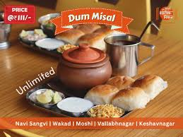

üç® Summer Treat: Mango Mastani @ Sujata ‚Äì ‚Çπ80 only!

üî• Misal Pav + Buttermilk @ Bedekar ‚Äì Just ‚Çπ60!
üéÅ Diwali Offer: Free Ladoo Box on ‚Çπ500+ at Kaka Halwai
☀️ Morning Special: Poha + Tea @ Vaishali, FC Road – ₹40
üå∂Ô∏è Spicy Bhel Puri @ Tulshibaug ‚Äì Only ‚Çπ30!